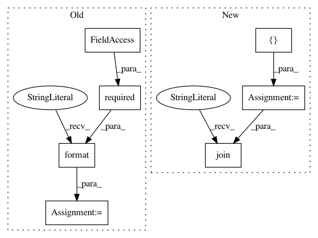

ca5a939ece254a1b5ab7cd1ea9f3a7b6658c52e3,python/src/vmaf/__init__.py,ExternalProgramCaller,call_psnr,#Any#Any#Any#Any#Any#Any#Any#,90
Before Change
// APPEND (>>) result (since _prepare_generate_log_file method has already created the file
// and written something in advance).
psnr_cmd = "{psnr} {yuv_type} {ref_path} {dis_path} {w} {h} >> {log_file_path}" \
.format(
psnr=required(ExternalProgram.psnr),
yuv_type=yuv_type,
ref_path=ref_path,
dis_path=dis_path,
w=w,
h=h,
log_file_path=log_file_path,
)
if logger:
logger.info(psnr_cmd)
run_process(psnr_cmd, shell=True)
After Change
pixel_format, bitdepth = convert_pixel_format_ffmpeg2vmafrc(yuv_type)
psnr_cmd = [
required(ExternalProgram.vmafrc),
"--reference", ref_path,
"--distorted", dis_path,
"--width", str(w),
"--height", str(h),
"--pixel_format", pixel_format,
"--bitdepth", str(bitdepth),
"--output", log_file_path,
"--xml",
"--no_prediction",
"--feature", "float_psnr",
]
if logger:
logger.info(" ".join(psnr_cmd))
run_process(psnr_cmd)
@staticmethod
In pattern: SUPERPATTERN
Frequency: 3
Non-data size: 7
Instances
Project Name: Netflix/vmaf
Commit Name: ca5a939ece254a1b5ab7cd1ea9f3a7b6658c52e3
Time: 2020-04-10
Author: zli@netflix.com
File Name: python/src/vmaf/__init__.py
Class Name: ExternalProgramCaller
Method Name: call_psnr
Project Name: Netflix/vmaf
Commit Name: ac5ec4f6c2025ef0cd41468d75c9f404805bffef
Time: 2020-04-10
Author: zli@netflix.com
File Name: python/src/vmaf/__init__.py
Class Name: ExternalProgramCaller
Method Name: call_ms_ssim
Project Name: Netflix/vmaf
Commit Name: ac5ec4f6c2025ef0cd41468d75c9f404805bffef
Time: 2020-04-10
Author: zli@netflix.com
File Name: python/src/vmaf/__init__.py
Class Name: ExternalProgramCaller
Method Name: call_ssim